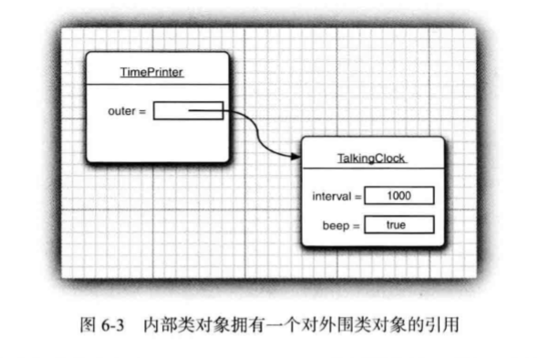

第五章 继承
5.1 类、超类和子类
超类和子类之间有明显的is-a关系
5.1.1 定义子类
5.1.2 覆盖方法
子类中不可直接访问父类的私有域，必须借助公用的接口，在使用父类的接口时，要用super调用父类方法；
super与this不同，它不是对对象的引用，而只是一个指示编译器调用父类方法的特殊关键字
5.1.3 子类构造器
- 用super调用父类构造器
- 子类没有显示地调用父类构造器，会隐式调用父类不带参数的构造器，如果此构造器在父类没有定义，会出现异常
5.1.4 继承层次
5.1.5 多态
- is-a规则，即置换法则，表明程序中出现超类对象的地方都可以用子类对象置换
- 不能将一个超类的引用对象赋给子类变量（个人：除非采用强制转型且该超类对象的实际对象为子类对象）
5.1.6 理解方法调用
- 静态绑定和动态绑定
- 方法表的使用
5.1.7 阻止继承：final类和方法
同时还可以阻止动态绑定
5.1.8 强制类型转换
instanceof关键字
5.1.9 抽象类
抽象类不可实例化；没有抽象方法也可以成为抽象类
5.1.10 受保护的访问
Object类中的clone是典型的protected方法
5.2 Object： 所有类的超类
基本类型不是对象
5.2.1 equals 方法
为了防止null的情况，可以使用Object的equals方法，如 果两个参数都为 null， Objects.equals(a，b) 调用将返回 true ; 如果其中一个参数为 null, 则返回 false ; 否则， 如果两个参数都不为 null， 则调用 a.equals(b)
5.2.2 相等测试与继承
自反性，对称性，传递性，一致性，对于任意非空x，与null进行equals返回false
由子类决定相等概念，处于对称性需采用getClass，由超类决定可使用instanceof
编写equals的完美流程
5.2.3 hashCode 方法
重新定义equals时要重新定义hashCode方法，如果equals为true，哈希值也应当相同
5.2.4 toString 方法
5.4 包装器与自动装箱
5.5 参数可变的方法
5.6 枚举类
5.7 反射
5.7.1 Class类
某类.class 某对象.getClass() Class.forName()
5.7.3 用某些反射类分析
Class类 getFields、getMethods、getConstructors 单复数，Declared
Modifier类：toString方法
Field、Method、Constructor类 ：getModifiers 返回int getName, getReturnType
5.7.4 在运行时使用反射分析对象
获得Field对象，传入引用变量使用get、set方法
5.7.5 使用反射编写泛型数组代码
不好的示范：
1 | public static Object[] badCopyOf(Object[] a, int newLength) // not useful |
个人：Object[]无法向下转型！！因为一开始就是定义的Object！
1 | //更好的做法 |
1 | int a = {1，2, 3, 4, 5 }; a = (int[]) goodCopyOf(a, 10); |
5.7.6 调用任意方法
Method类中的invoke Object invoke(Object obj, Object..args)
对于静态方法第一个参数忽略，
1 | Method ml = Employee.class.getMethod("getName"); |
注意转型
第六章 接口、lambda表达式与内部类
6.1 接口
6.1.1 接口的概念
“如果遵从某个特定的接口，那么就履行这项服务”;
接口中所有方法都自动地属于public;
1 | //经典接口 Comparable： |
1 | //java8后已经实现了泛型 |
1 | //两个常用方法 |
compare方法面临与equals一样的问题，即是子类定义相等概念还是父类定义；
如果子类定义需进行类型检查，类型不符抛出异常；
父类定义可声明一个final方法
6.1.2 接口的特性
1 | //接口可以像类一样继承，称之为扩展 |
6.1.3 接口与抽象类
问：既然有类可以继承，为什么还需要接口呢？
答：因为java不支持多重继承，每个类只能最多有一个父类，而接口可以实现多个。
6.1.4 静态方法
java8后可以在接口中实现静态方法，“理论上是可以的，只是背离了接口设计的初衷”。
1 | public interface Path{ |
6.1.5 默认方法
问：啥是默认方法？
答： 用default 关键字为接口中的方法添加默认实现
1 | //例如 |
问：这有啥用处？
答：用处如下：
1 | public interface MouseListener{ |
1 | public interface Collection{ |
1 | //在 JavaAPI 中，你会看到很多接口都有相应的伴随类，这个伴随类中实现了相应接口的部分或所有方法， 如CoUection/AbstractCollectkm或 MouseListener/MouseAdapter。在 JavaSE 8 中， 这个技术已经过时。现在可以直接在接口中实现方法。 |
1 | //默认方法可用于接口演化。即在接口中新增方法时，可以设置为默认方法，那样在旧版本中实现了此接口又不需要新方法的类就可以免遭其害。 |
6.1.6 解决默认方法的冲突
问：什么是默认方法冲突？
答：一个接口中的默认方法与其它超类中的方法或其它接口中的方法（不一定要默认）相同。
问：怎么解决？
答：两条原则：
1 | - 超类优先：很好理解，接口要求实现一个方法，继承了超类的方法正好就实现了，天上掉馅饼； |
6.2 接口示例
6.2.1 接口与回调
通过类名导入了java.swing.Timer。这就消除了javax.swing.Timer与java.util.Timer之间产生的二义性
6.2.2 Comparator接口
1 | //经典的比较器接口，常用于排序 |
6.2.3 对象克隆
问：克隆方法的难点在哪？
答：在于引用变量的拷贝。对于不可变变量来说，更改克隆对象只会创造一个新变量，对于原对象中的变量没有影响；对于引用变量来说，改变克隆对象中变量同时会改变原对象中的变量。因此需要深复制。
问：关于Cloneable接口？
答：这是一个标记接口，本身不包含任何方法，但是凡是实现了clone方法的类必须实现该接口，否则会报错。
问：关于子类实现clone方法？
答：我个人认为，这跟递归差不多，见下面代码：
1 | class Employee implements Cloneable{ |
问：你还会了什么？
答：克隆并不常用，标准库只有不到5%的类实现了此方法；所有数组都有一个public的clone方法
6.3 lambda表达式
6.3.1 为什么引入lambda表达式
1 | public LengthComparator implements Comparator<String> |
6.3.2 lambda表达式的语法
1 | //只需要一个表达式 |
6.3.3 函数式接口
问：什么是函数式接口？
答：对于只有一个抽象方法的接口，需要这种接口的对象时，就可以提供一个lambda表达式，这种接口称为函数式接口。
6.3.4 方法引用
1 | object::instanceMethod |
6.3.5 构造器的引用
1 | ArrayList<String> names = ....; |
6.3.6 变量作用域
1 | //可以在lambda表达式中访问外围变量 |
1 | //在lambda表达式中引用的外围变量不可改变 |
1 | //在lambda中声名一个与局部变量同名的参数或者局部变量是非法的 |
1 | //在lambda使用this使，是指创建这个表达式的方法的this参数 |
6.3.7 处理lambda表达式
- 列举了一些函数式接口
- lambda的特征是延迟执行
- Predicate.isEqual(a)等同于a::equals，Predicate的源码
6.3.8 再谈Comparator
各种骚操作，暂时按下不表
6.4 内部类
问：为什么要使用内部类呢？
答：好处多多：
1. 内部类可以访问该类定义的所在作用域中的数据，包括私有的数据；
2. 内部类可以对同一个包中的其他类隐藏起来；
3. 当想定义一个回调函数且不想编写大量代码时，使用匿名内部类比较方便。
6.4.1 使用内部类访问对象的状态
1 | public class TalkingClock |
